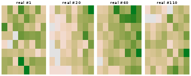
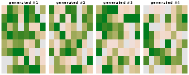

Pilar 9 — Diffusion Models for Soil-Map Patches
Hugo Rodrigues
Source:vignettes/pilar9-diffusion-models.Rmd
pilar9-diffusion-models.RmdAbstract
Every method in this package so far answers “what is the soil property here?” with a mean and, if you are lucky, an interval. None of them answers a question soil scientists actually ask: what does a plausible soil landscape look like? A per-pixel interval cannot answer it, because the pixels are not independent — a map assembled from per-pixel quantiles is smoother than any real landscape and belongs to no coherent realisation.
Pillar 9 samples whole maps. It implements a Denoising Diffusion Probabilistic Model (Ho et al. 2020) over soil-map patches: a generative model whose draws are joint realisations, each internally consistent in a way marginal quantiles never are.
1. The forward process is fixed, only the reverse is learned
The construction is unusual among generative models in that half of it has no parameters at all.
Forward. Take a real patch and destroy it over steps by adding Gaussian noise on a fixed schedule :
Writing and , the steps telescope into a closed form — you can jump to any noise level in one shot, which is what makes training cheap:
Reverse. The only learned object is a denoiser trained to recover the noise that was added. Because the forward step is Gaussian with small , the reverse step is also approximately Gaussian, and its mean is available in closed form once is known.
The training objective reduces to plain regression:
No adversarial game, no discriminator, no mode collapse — the loss is a mean squared error against a target you generated yourself.
1.1 The schedule
edaphos uses the cosine schedule of Nichol and Dhariwal
(Nichol and
Dhariwal 2021) rather than the original linear one, because a
linear schedule destroys small patches too early and wastes most of the
trajectory on pure noise.
sch <- dm_cosine_schedule(T = 100L)
str(sch, max.level = 1)
#> List of 6
#> $ T : int 100
#> $ alphas : num [1:100] 0.999 0.999 0.998 0.998 0.997 ...
#> $ betas : num [1:100] 0.000531 0.001117 0.001603 0.002089 0.002577 ...
#> $ alphabar : num [1:100] 0.999 0.998 0.997 0.995 0.992 ...
#> $ sqrt_alphabar : num [1:100] 1 0.999 0.998 0.997 0.996 ...
#> $ sqrt_one_minus_alphabar: num [1:100] 0.0231 0.0406 0.057 0.073 0.0888 ...
# alphabar is the signal that survives to step t
round(sch$alphabar[c(1, 10, 25, 50, 75, 100)], 4)
#> [1] 0.9995 0.9722 0.8471 0.4939 0.1443 0.0000decays monotonically from ~1 (the patch is intact) to ~0 (pure noise). The cosine shape keeps signal alive through the middle of the trajectory, which is where most of the learning happens.
2. Real patches from the Cerrado grid
br_cerrado is a 45 × 45 regular grid, so it can be
reshaped into an image and cut into overlapping patches — real spatial
structure, no simulation.
Which layer to model is not arbitrary. A generative model of a spatial field can only learn structure the field actually has, so measure that first:
data(br_cerrado)
g <- 45L
ux <- sort(unique(br_cerrado$x)); uy <- sort(unique(br_cerrado$y))
as_grid <- function(v) {
m <- matrix(NA_real_, g, g)
m[cbind(match(br_cerrado$x, ux), match(br_cerrado$y, uy))] <- v
m
}
# Lag-1 spatial autocorrelation, averaged over rows and columns.
lag1 <- function(p) {
h <- stats::cor(as.vector(p[, -ncol(p)]), as.vector(p[, -1]))
v <- stats::cor(as.vector(p[-nrow(p), ]), as.vector(p[-1, ]))
(h + v) / 2
}
vapply(c("soc", "twi", "elev", "map_mm"),
function(nm) lag1(as_grid(br_cerrado[[nm]])), numeric(1))
#> soc twi elev map_mm
#> 0.2304873 0.7848433 0.9396653 0.9684636soc in this synthesised grid is close to white: it is
generated as a function of the covariates plus independent noise, so
once you look at an 8 × 8 window there is little left for a spatial
model to learn. (The Pillar 7 vignette reaches the same conclusion from
the other direction.) We therefore model
twi, the topographic wetness index — a
standard DSM covariate and a soil-water proxy — which does carry
short-range structure.
field <- as_grid(br_cerrado$twi)
# The denoiser works on zero-mean, unit-scale fields.
field_z <- (field - mean(field)) / stats::sd(field)
P <- 8L # patch size
starts <- seq(1L, g - P + 1L, by = 3L)
grid <- expand.grid(r = starts, c = starts)
stack <- array(0, dim = c(nrow(grid), P, P))
for (i in seq_len(nrow(grid))) {
r <- grid$r[i]; cc <- grid$c[i]
stack[i, , ] <- field_z[r:(r + P - 1L), cc:(cc + P - 1L)]
}
c(n_patches = dim(stack)[1],
sd = mean(apply(stack, 1L, stats::sd)),
lag1 = mean(apply(stack, 1L, lag1)))
#> n_patches sd lag1
#> 169.0000000 0.5957468 0.3435722
op <- par(mfrow = c(1, 4), mar = c(0.4, 0.4, 1.4, 0.4))
for (i in c(1, 20, 60, 110))
image(stack[i, , ], axes = FALSE, main = sprintf("real #%d", i),
col = hcl.colors(32, "Terrain2"))
par(op)3. Training the denoiser
fit <- dm_fit(
stack = stack,
backend = "r", # reference path, so the vignette knits with no libtorch
T = 100L,
epochs = 250L,
hidden = 48L,
lr = 0.02,
seed = 1L
)
#> [dm_fit] backend = 'r' is a reference sampler whose draws are over-dispersed and spatially incoherent (not calibrated to the field's spatial statistics); use backend = 'torch' (the default when libtorch is present) for coherent samples.
length(fit$history)
#> [1] 250
round(utils::tail(fit$history, 3), 5)
#> [1] 0.87110 0.87930 0.87186The loss is the score-matching MSE above. It should fall and then flatten; it does not go to zero, and should not — the target is irreducibly random.
4. Sampling
dm_sample() runs ancestral sampling: start from
and step down to
,
subtracting the predicted noise and re-injecting a smaller amount at
each step.
op <- par(mfrow = c(1, 4), mar = c(0.4, 0.4, 1.4, 0.4))
for (i in 1:4)
image(gen[i, , ], axes = FALSE, main = sprintf("generated #%d", i),
col = hcl.colors(32, "Terrain2"))
par(op)5. Judging a generative model honestly
“They look plausible” is not a result. A generative model of spatial fields makes a checkable claim: the spatial statistics of its draws should match those of the training data. Two summaries are enough to catch the common failure modes.
gen_many <- dm_sample(fit, n_samples = 40L, seed = 99L)
summarise <- function(a, lbl) {
data.frame(
set = lbl,
sd = sprintf("%.3f", mean(apply(a, 1L, stats::sd))),
lag1 = sprintf("%.3f", mean(apply(a, 1L, lag1)))
)
}
rbind(summarise(stack, "real patches"),
summarise(gen_many, "generated"))
#> set sd lag1
#> 1 real patches 0.596 0.344
#> 2 generated 3.032 -0.020sd catches a sampler that has collapsed towards the mean
field or, in the other direction, one that is diverging.
lag1 is the one that matters here: it asks whether
neighbouring cells in a generated patch co-vary the way they do in the
data. A model that matches the marginal histogram while emitting
spatially incoherent noise scores near zero.
Read the table. The generated lag1 is approximately
zero against roughly 0.34 in the data, and the
generated sd is several times too large. The pure-R backend
has learned the marginal scale of the field only: it is
producing over-dispersed noise, not soil landscapes.
That is a real, reproducible negative result, and it is reported here rather than hidden behind four plausible-looking thumbnails. Section 6 explains why, and Section 7 what to do about it.
6. Why: what the R backend actually trains
With backend = "r" — requested explicitly here so the
vignette knits with no system dependencies (the package default is
"auto", which uses torch when libtorch is present and falls
back to this R path otherwise) — the denoiser’s hidden layers are
randomly initialised and frozen; only the readout layer
is fit. That is an Extreme Learning Machine regime (Huang et al.
2006): fast, dependency-free, genuinely trained, and far less
expressive than a full network.
The loss tells you this directly, once you know what to compare it to. The target is standard normal, so a denoiser that predicts nothing at all — — scores a mean squared error of exactly 1:
c(final_loss = utils::tail(fit$history, 1),
trivial_loss = 1)
#> final_loss trivial_loss
#> 0.8718602 1.0000000The gap between the two is all the structure the model has captured. Adding epochs does not close it: the readout has already converged, and random features cannot represent the score of a spatially correlated field.
7. The torch backend
backend = "torch" trains every layer by autograd, which
is what the architecture needs to learn a spatial score function:
fit_t <- dm_fit(stack, T = 200L, epochs = 1500L, hidden = 128L,
lr = 1e-3, backend = "torch", device = "cpu", seed = 1L)
gen_t <- dm_sample(fit_t, n_samples = 40L, seed = 99L)
c(sd = mean(apply(gen_t, 1L, stats::sd)),
lag1 = mean(apply(gen_t, 1L, lag1)))This chunk is not evaluated when the vignette is built, because
torch is a Suggests dependency and the vignette must knit
without it. Run it yourself and apply the same §5 diagnostic — the
two-number check is the point, and it should be applied to whichever
backend you deploy, not taken on trust from this document.
8. Conditional generation
Passing conditioning makes the sampler produce patches
consistent with covariates rather than draws from the unconditional
prior — the route to “simulate this landscape given this
climate”.
elev <- as_grid(br_cerrado$elev)
cond <- matrix(0, nrow(grid), 1L)
for (i in seq_len(nrow(grid))) {
r <- grid$r[i]; cc <- grid$c[i]
cond[i, 1L] <- mean(elev[r:(r + P - 1L), cc:(cc + P - 1L)])
}
cond[, 1L] <- as.vector(scale(cond[, 1L]))
fit_c <- dm_fit(stack, conditioning = cond, backend = "r", T = 100L,
epochs = 250L, hidden = 48L, lr = 0.02, seed = 1L)
low <- dm_sample(fit_c, n_samples = 12L,
conditioning = matrix(-1.5, 12L, 1L), seed = 3L)
high <- dm_sample(fit_c, n_samples = 12L,
conditioning = matrix( 1.5, 12L, 1L), seed = 3L)
c(mean_low_elev = mean(low),
mean_high_elev = mean(high))
#> mean_low_elev mean_high_elev
#> -0.1867973 -0.2085048If conditioning is doing anything, these two differ in the direction of the elevation–carbon relationship in the training grid. With an ELM readout and a 100-step schedule the effect is modest; treat this as a demonstration of the interface rather than a calibrated conditional simulator.
9. Limitations
- The pure-R backend does not produce spatially coherent samples (§5, §6). It is a correct implementation of the DDPM algorithm with a denoiser too weak to learn the score of a spatial field. Treat it as a reference implementation and a test bed for the interface, not as a generative model you would publish from.
- Patches are 8 × 8. Real soil landscapes have structure at scales this window cannot represent.
- Overlapping patches cut from one 45 × 45 grid are not independent
training examples; the effective sample size is far below
dim(stack)[1]. - Nothing here stitches patches into a seamless map. Tiling generated patches produces visible seams — patch-to-map assembly is not implemented.
- The denoiser is an MLP over the flattened patch, not a 2-D U-Net, so it has no translation-equivariant inductive bias. This is the main architectural gap between this pillar and the diffusion literature.
-
br_cerradois synthesised, and §2 modelstwirather than a soil property becausesocin this grid is near-white at patch scale. This vignette demonstrates the sampler and its diagnostic, not a finding about Cerrado soils.